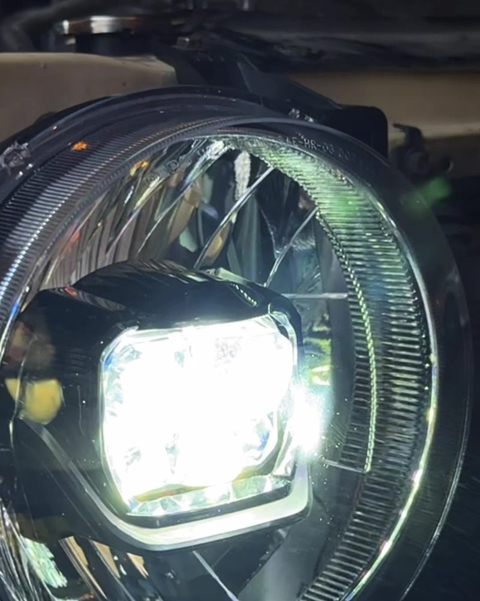
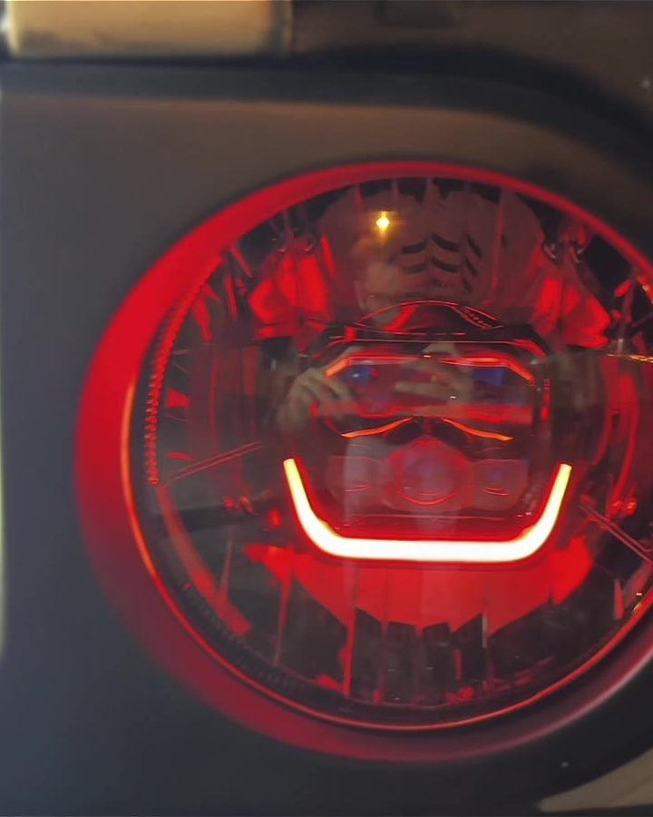

FJ Cruiser
accessories.
Inside & out.
Android screens, carbon interior trim, lighting, emblems, off-road parts and more for the Toyota FJ Cruiser — from Kazi Auto in Deira, Dubai. Shipped worldwide.


Build your own
FJ headlights.
Pick the housing finish, projector cover, DRL colour (or RGB) and projector — up to the new 3" laser beam projector. Made in our Deira workshop.
Customise headlightsUpgrade your FJ
The full Kazi Auto range — FJ Cruiser parts plus universal car accessories. Products show photos from their Amazon listings where available; the rest are illustrations.
See it in person.
Fit it the same day.
Come to the Kazi Auto shop in Deira to see screens running, check mats against your FJ, and ask about installation.
Deira, Dubai
Naif 9 Building, Shop 8, 9th Street — behind Fortune Hotel, Deira, Dubai, UAE.
+971 58 241 3312
Send the product name or SKU and your FJ's model year for stock, shipping and fitting time.
Chat on WhatsAppSales@kaziautotrading.com
For trade and wholesale orders, or bigger quotes.
Will it fit my FJ?
Many parts are listed for specific FJ model years. Pick your year and the part to check.
Worldwide shipping
We ship worldwide. Free shipping in the UAE on orders over AED 500.
Installation
Have screens and parts fitted at the Kazi Auto shop in Deira.
Made for the FJ
Most parts are model-specific — check the fitment years on each one.
Ask on WhatsApp
Send your model year and get an answer before you buy.
FJ Cruiser accessories in Dubai — FAQ
Do you install FJ Cruiser accessories in Dubai?
Yes. We fit screens, lights, headlights and most parts at the Kazi Auto shop at Naif 9 Building, Shop 8, Deira, Dubai. Message us on WhatsApp to book a time.
Do you ship outside the UAE?
Yes, we ship worldwide. UAE delivery is free on orders over AED 500 and AED 30 below that, usually within 1–3 working days. For other countries we confirm the shipping cost on WhatsApp.
How do I pay?
Add products to the cart and send the order on WhatsApp. We confirm stock and then you pay by bank transfer, or cash on delivery inside the UAE.
Will the part fit my FJ Cruiser?
Most parts list the FJ Cruiser model years they fit. Use the fitment check on this page or send us your model year on WhatsApp before you buy.
Do you have Android screens with Apple CarPlay for the FJ Cruiser?
Yes. We stock 9-inch, 12.3-inch, 13.3-inch and 24-inch Android screens for the FJ Cruiser with Apple CarPlay and Android Auto, with installation in Deira.
One truck.
Every upgrade.
FJ ZONE is the FJ Cruiser line from Kazi Auto, the Deira auto accessories shop known for Android screens, car electronics and modifications. FJ ZONE brings everything we stock for the Toyota FJ Cruiser into one place — from in-dash screens with Apple CarPlay to carbon interior trim, lighting, emblems and off-road parts — and ships it worldwide.
A Kazi Auto brand